한성제품
냉장쇼케이스 조명, 백색과 주광색 중 무엇을 고를까
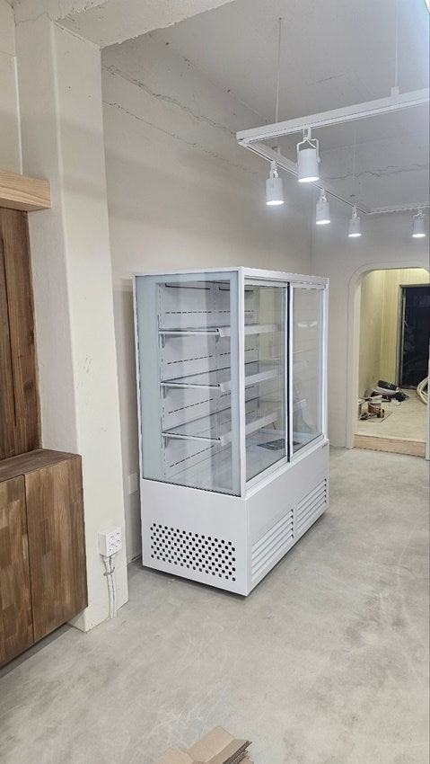
냉장쇼케이스 조명은 LED가 기본이고, 상품을 또렷하게 보여 줄지 따뜻하게 보여 줄지에 따라 백색과 주광색 중에서 고르시면 됩니다. 색만 보지 말고 조명이 달리는 위치와 프레임 색, 유리 결로 여부까지 함께 정해야 진열 상품이 제 색으로 보입니다.
안녕하세요. 매장 크기에 맞춰 냉장쇼케이스를 직접 만드는 한성쇼케이스입니다.
상담을 하다 보면 사이즈와 색상은 오래 고민하시면서 조명은 "그냥 기본으로 해 주세요" 하고 넘어가시는 사장님이 많습니다.
그런데 막상 설치하고 불을 켜 보면 케이크가 창백해 보인다거나, 음료 라벨이 누렇게 보인다는 이야기를 듣게 됩니다.
냉장쇼케이스는 하루 종일 불이 켜져 있는 장비라 조명이 곧 상품의 첫인상입니다. 같은 상품이라도 빛의 색과 방향에 따라 손님 눈에 들어오는 느낌이 꽤 달라집니다.
오늘은 냉장쇼케이스 조명을 고를 때 무엇부터 정하면 되는지, 진열 상품과 매장 분위기 기준으로 차근차근 정리해 보겠습니다.
1. 백색과 주광색, 상품 기준으로 고르기
요즘 냉장쇼케이스에는 대부분 LED 조명이 들어가고, 색은 크게 백색과 주광색 계열로 나뉩니다. 어느 쪽이 더 좋다기보다 진열할 상품이 무엇이냐에 따라 맞는 쪽이 달라집니다.
흰 생크림 케이크나 투명한 병 음료, 포장 라벨이 중요한 상품은 색이 왜곡되지 않는 쪽이 깔끔하게 보입니다.
반대로 빵, 디저트처럼 따뜻한 느낌을 살리고 싶은 상품은 색감을 조금 부드럽게 보여 주는 쪽이 어울리는 경우가 많습니다.
결정이 어렵다면 실제로 팔 상품 몇 가지를 들고 와 같은 빛 아래에 놓아 보는 것이 가장 정확합니다.
사진으로 보는 것과 눈으로 보는 것이 다르기 때문입니다.
- 진열할 대표 상품 세 가지를 먼저 정해 두세요.
- 흰색·투명 상품이 많은지, 갈색 계열 상품이 많은지 나눠 보세요.
- 매장 천장 조명 색과 너무 동떨어지지 않게 맞추세요.
2. 조명이 달리는 위치가 더 중요할 때도 있습니다
같은 색 LED라도 상단에만 있는지, 칸마다 선반 앞쪽에 있는지에 따라 아랫단 상품의 밝기가 달라집니다.
2단, 3단, 4단으로 높이가 올라갈수록 위쪽 빛이 아랫단까지 내려오기 어려워 아랫칸이 어둡게 보이기 쉽습니다.
그래서 단수가 많은 냉장쇼케이스는 칸마다 조명을 넣을지, 상단 조명만으로 충분한지 미리 정해 두는 것이 좋습니다.
손님 눈높이에 오는 칸이 가장 밝게 보이도록 배치하면 진열 효과가 커집니다.
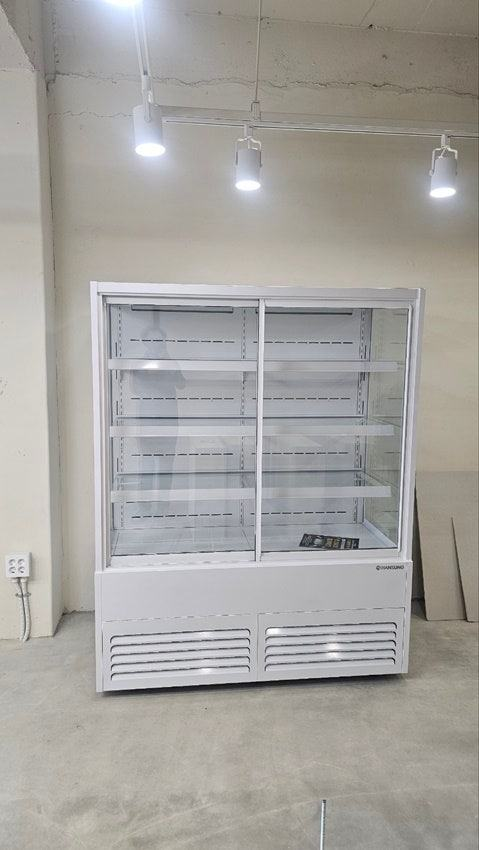
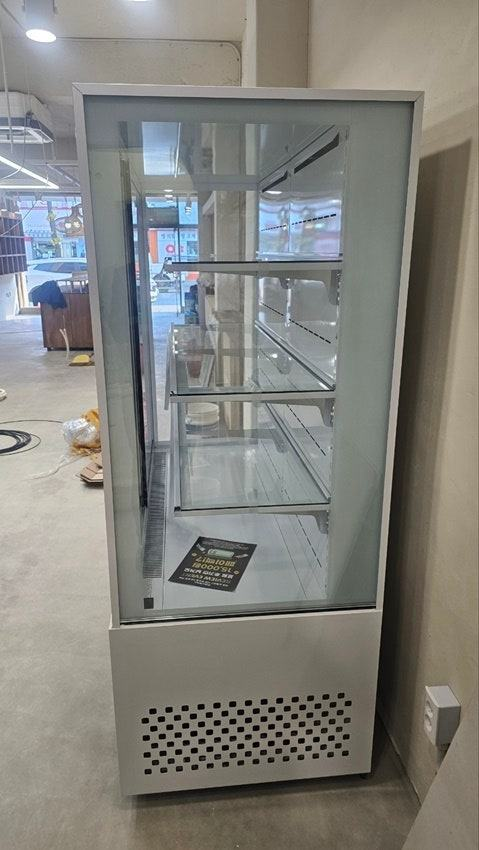
3. 프레임 색과 문 방식이 빛을 바꿉니다
조명은 혼자 보이지 않고 프레임 색과 함께 보입니다. 블랙 프레임은 내부 빛이 상대적으로 또렷하게 떠 보이고, 화이트나 월넛 프레임은 매장 전체가 밝고 부드러운 인상으로 정리됩니다.
스테인리스 소재는 빛을 반사해 고급스러운 느낌을 더해 줍니다.
문 방식도 함께 보셔야 합니다. 앞문형은 손님이 직접 열고 꺼내는 구조라 앞쪽 유리 너머로 상품이 선명해야 하고, 뒷문형은 직원이 꺼내 주는 구조라 손님 쪽에서 보는 각도가 고정됩니다.
사각형, 사선형, 곡선형 유리 형태에 따라 빛이 반사되는 방향도 달라지니 설치할 자리의 시선 높이를 기준으로 정해 보세요.
- 블랙 프레임은 상품을 또렷하게, 화이트는 매장을 밝게 보여 줍니다.
- 곡선형 유리는 반사가 생기는 각도를 미리 확인하세요.
4. 유리가 흐리면 조명도 소용없습니다
아무리 좋은 조명을 넣어도 유리에 김이 서리거나 성에가 끼면 상품이 뿌옇게 보입니다. 특히 문을 자주 여닫는 매장이나 습한 계절에는 유리 상태가 진열 효과를 크게 좌우합니다.
조명 상담을 하실 때 냉각 방식과 설치 자리의 습도, 주변 열기까지 같이 말씀해 주시면 유리가 맑게 유지되는 구성을 함께 안내해 드립니다.
체크리스트
- 진열할 대표 상품과 그 색감
- 백색·주광색 중 원하는 분위기
- 조명을 넣을 칸과 위치
- 프레임 색상과 소재
- 앞문형·뒷문형 등 문 방식
- 설치 자리의 습도와 주변 열기
현장에서 자주 보는 경우: 사이즈와 색만 정하고 조명은 나중에
쇼케이스냉장고 구매 상담에서 사장님들이 가장 먼저 묻는 것은 사이즈입니다. 기성품은 너비 700mm부터 1800mm까지 정해진 규격에 높이도 2단, 3단, 4단으로 나뉘어, 매장에 맞지 않으면 맞춤 제작을 함께 검토하게 됩니다.
그다음이 블랙, 화이트, 월넛 같은 색상과 앞문형·뒷문형·양문형 문 형식인데, 조명은 이 과정에서 뒤로 밀리기 쉽습니다.
실제로는 LED 백색과 주광색 중 무엇을 고르느냐에 따라 매장 분위기와 상품이 보이는 모습이 달라지기 때문에, 상담 단계에서 색상·디자인과 함께 정하시도록 안내하고 있습니다.
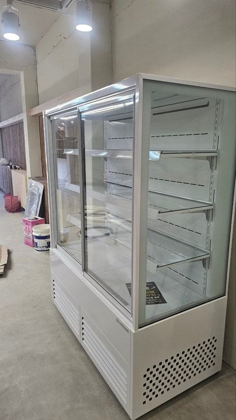
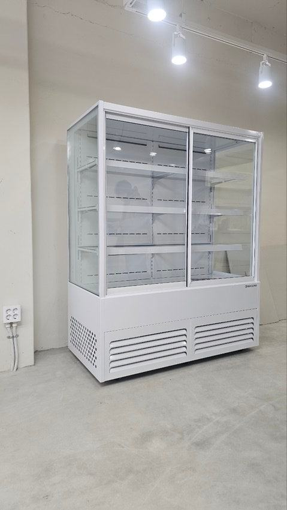
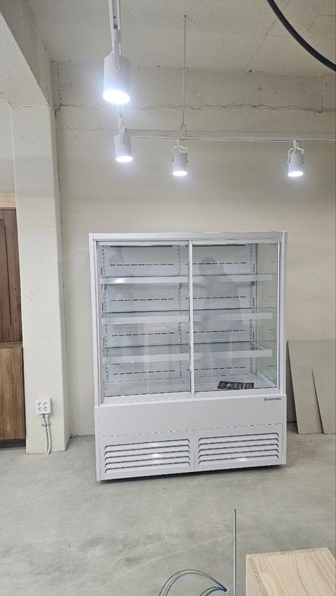
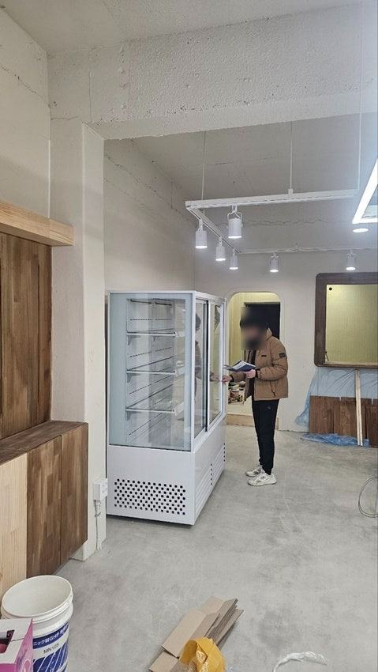
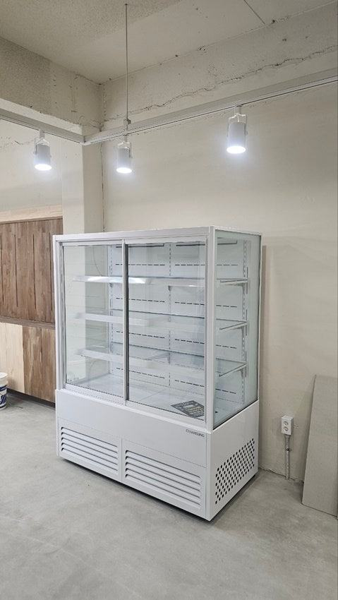
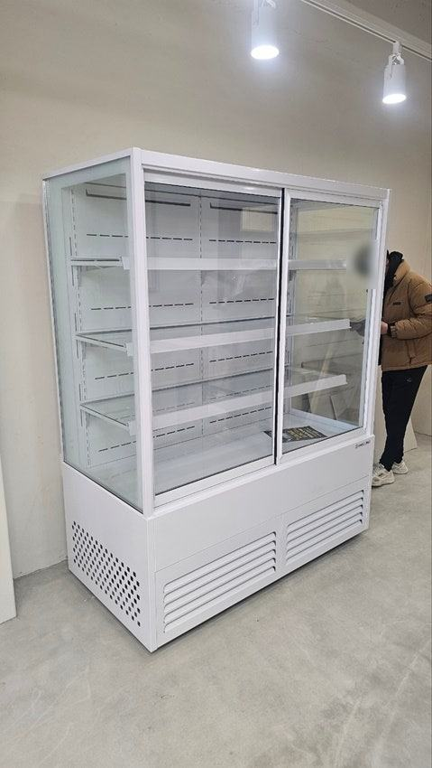
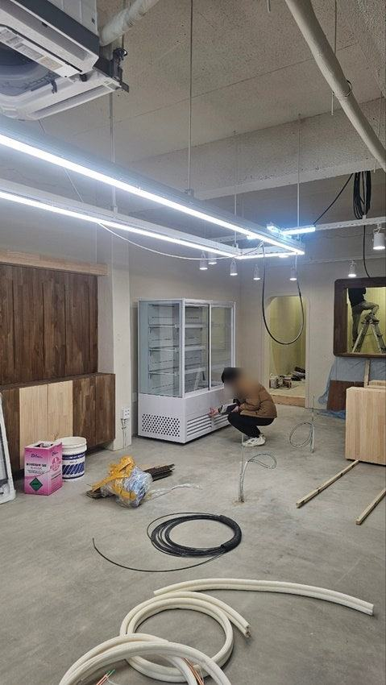
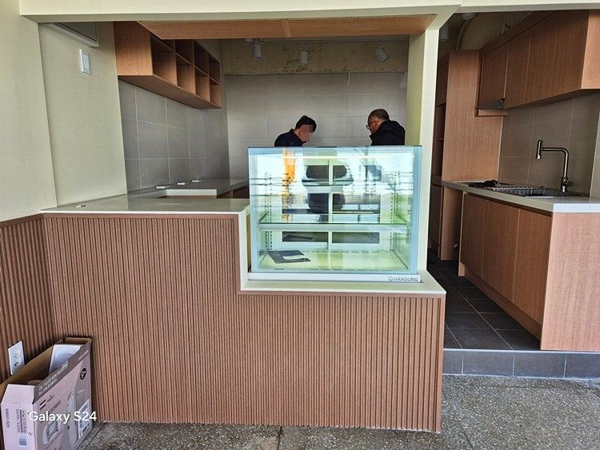


| 구분 | 기성 쇼케이스냉장고 대표 규격 |
|---|---|
| 너비 | 700mm / 900mm / 1200mm / 1500mm / 1800mm |
| 높이 | 2단, 3단, 4단 |
| 조명 | LED 백색, 주광색 |
자주 묻는 질문
이미 쓰고 있는 냉장쇼케이스의 조명 색만 바꿀 수 있나요?
제품 구조와 배선 방식에 따라 다릅니다. 모델명과 내부 사진을 보내 주시면 교체가 가능한지 먼저 확인해 드립니다.
칸마다 조명을 넣으면 내부 온도에 영향이 있나요?
LED는 열이 적은 편이지만 칸 수와 상품 종류에 따라 구성이 달라집니다. 진열 상품을 알려 주시면 냉각과 조명 배치를 함께 맞춰 설계해 드립니다.
카페와 베이커리 중 어느 쪽에 어떤 조명이 맞나요?
업종보다 진열 상품의 색이 기준입니다. 흰색·투명 상품이 중심이면 또렷한 빛을, 빵처럼 따뜻한 색 상품이 중심이면 부드러운 빛을 먼저 고려해 보세요.
매장 조건에 맞춰 만드는 한성쇼케이스
원하시는 제품 사진과 설치할 공간 사진만 보내 주셔도 매장에 맞는 구성을 추천해 드립니다.
- 전국 240여 개 A/S 전담 센터 운영
- 본사 대량 자재 매입으로 품질 대비 합리적인 가격
- 유럽제·삼성 냉각 콤프레셔 적용
- 국내 최초 쇼케이스 전문 디자이너 상주
매장 폭과 원하는 진열 구성을 알려 주세요. 실측과 견적을 안내해 드립니다.
031-986-2458